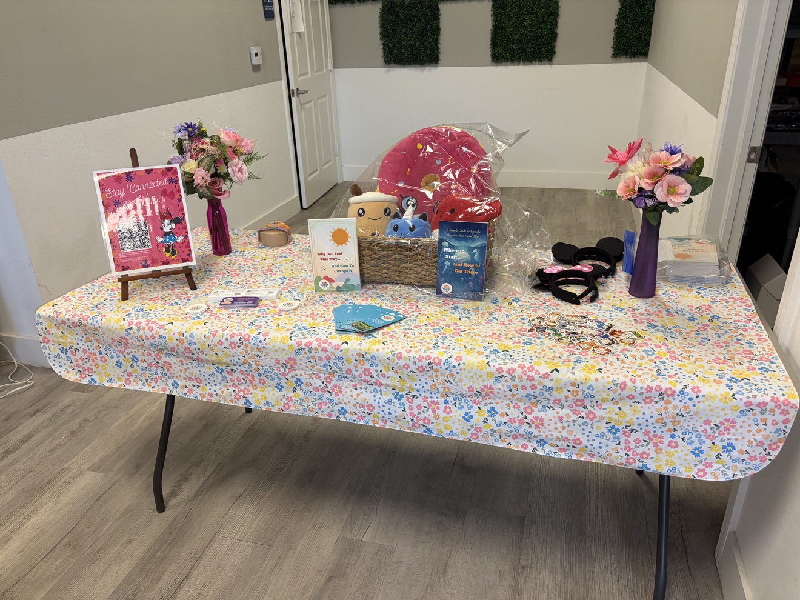
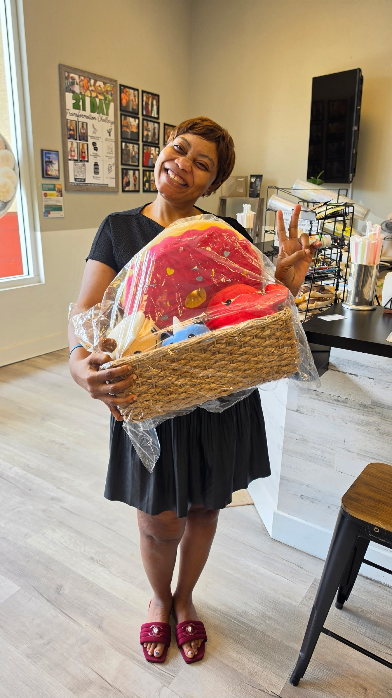

Southwest Florida Community Reach Program
Building emotional intelligence access across Southwest Florida, one home at a time.
The Southwest Florida Community Reach Program places emotional intelligence tools, informed by emotional wellness research, directly into the hands of individuals, families, youth, and community spaces where early support can make a lasting difference. Through large scale distribution and local outreach, this program expands access to practical, prevention focused resources that people can engage with in their own time, at their own pace, and within the places they already live, learn, gather, and grow.
Our Reach So Far, and Where We Are Going
About 210 families reached so far. Our goal: materials reaching 50,000 homes across eight Southwest Florida communities.
Cape Coral · Fort Myers · Fort Myers Beach · Babcock Ranch · Estero · Bonita Springs · Naples · Marco Island
This is what becomes possible when a community decides to invest in prevention.
Real photo of a GPF volunteer handing an emotional intelligence book to a community member at an outdoor Southwest Florida outreach event, blurred crowd in the background.
Intentional, Community Based Distribution
This initiative focuses on intentional, community based distribution. Rather than waiting until people are already in crisis, the program helps place supportive emotional intelligence materials into everyday environments where access can be easier, more natural, and more immediate.
- Bulk distribution of emotional intelligence books into Southwest Florida communities
- Placement through local access points such as schools, neighborhood spaces, outreach events, and family centered settings
- Resources designed to be approachable, practical, and easy to engage with independently
- Support for early awareness, reflection, communication, and emotional skill building
Meeting Communities Where They Already Are
The program is built to meet communities where they already are. Distribution can happen through direct outreach, take home access, and community centered partnerships that allow resources to move beyond a single event and into homes and daily life.
- Books shared at community events, school related initiatives, and local outreach efforts
- Take home distribution so individuals and families can continue engaging with the material privately
- Placement into waiting spaces, support environments, and trusted neighborhood access points
- Flexible outreach models that can serve youth, parents, caregivers, and the broader community

Every Contribution Moves Resources Farther
Real photo of packed distribution boxes of GPF books ready for a community event, stacked and labeled, wide shot.
Every contribution helps move resources farther into the community. Support helps cover the cost of books, outreach preparation, distribution logistics, local partnerships, and the expansion of access across multiple Southwest Florida communities.
- Increases the number of books that can be placed directly into communities
- Helps widen access across diverse neighborhoods and local populations
- Supports prevention focused outreach before emotional challenges become more severe
- Strengthens long term community access to practical emotional wellness tools
By expanding access in this way, the program is not only distributing books. It is helping build a wider foundation for emotional awareness, personal reflection, and practical support throughout Southwest Florida.
Here Is What Your Support Does Today
Right now, families across Southwest Florida are navigating stress, disconnection, and emotional challenges without the tools or language to move through them. This program changes that, not by waiting for crisis, but by showing up before one arrives. A single book placed in the right hands can spark reflection, open a conversation, or give someone words for what they have been feeling for years.
Distribution Cycle
A $2,500 donation sustains the support center's distribution for an entire cycle.
Give $2,500Be part of what changes the trajectory of a community. No contribution is too small. Every dollar funds direct community access to tools designed to prevent emotional distress from becoming a crisis.
Stronger Through Collaboration
The Southwest Florida Community Reach Program grows stronger through collaboration. Schools, faith communities, neighborhood organizations, local businesses, and healthcare providers all play a role in how far these resources can travel.
If your organization shares a commitment to prevention, early access, and community wellness, we want to hear from you. Distribution partnerships, in kind support, event collaboration, and sponsorship opportunities are all available.

Real photo of a family at home reading a GPF book together in warm light, showing take home distribution in action.
Mental and emotional wellness does not begin in a clinic. It begins in the quiet moments: the conversation at the kitchen table, the book picked up in a waiting room, the resource a parent finds before they know they need it. The Southwest Florida Community Reach Program is built on that belief. Every distribution is an investment in what comes next for this region and for the people who call it home.